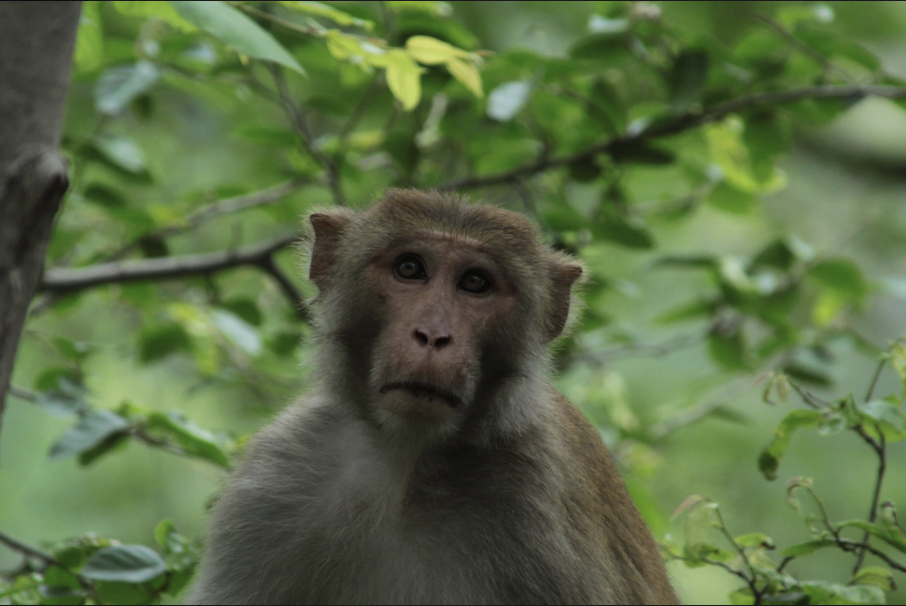
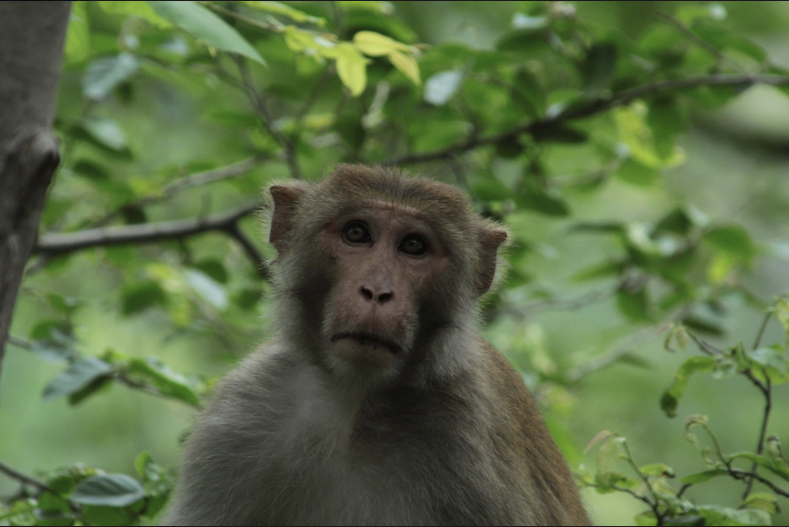
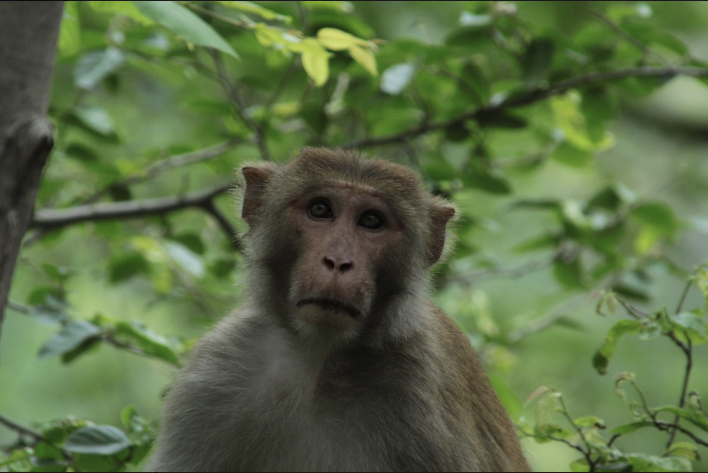
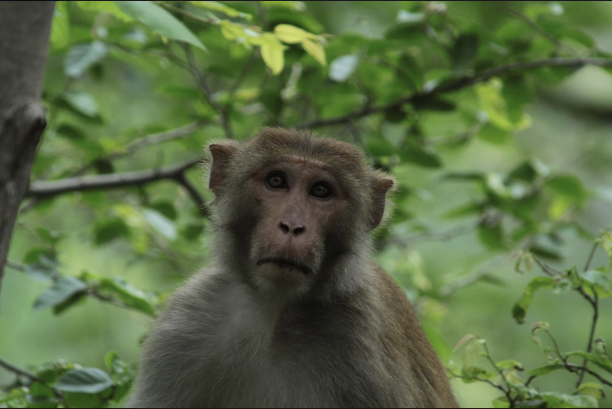

International Society for Universal Dialogue
ISUD is a society of scholars, mostly philosophers, from many parts of the world, devoted to promoting international dialogue and the discussion of fundamental questions of universal concern, which affect all humanity, such as world peace, human rights, dialogical interrelations of diverse cultures, and preservation of the world ecology.
The goal of this World Congress is to promote dialogue concerning various crucial philosophical issues in today’s world and to explore the role of philosophy in a time of crisis. Traditional human values underlying our social and political institutions are continually transformed by new developments in information technology, digitalization, artificial intelligence, and the drive for economic efficiency. As philosophers, we must neither shut ourselves in ivory towers nor indulge ourselves with armchair philosophy. We must face the issues that define our moment in history.
With this purpose in mind, we are pleased to organize the XII International Society for Universal Dialogue [ISUD] World Congress, in a Latin-American country, Peru, for the first time; and in a city such as Lima, that is affected by many of the issues we will be considering. From July 10th to 15th, at Pontifical Catholic University of Peru [PUCP]’s campus, we will celebrate this meeting with the spirit and disposition of dialogue, respect for dissent, and in search for viable alternatives to our contemporary forms of life.
Want to get more details about the XII 2018 World Congress.Visit to this page for more info